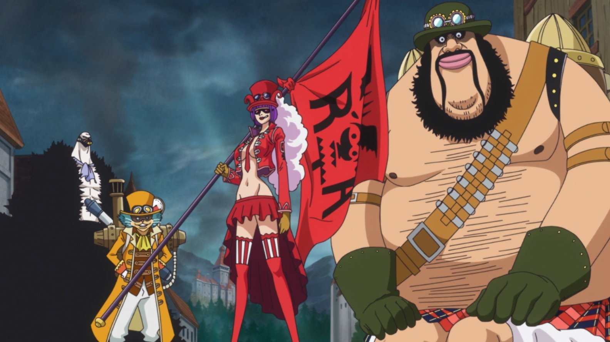

O Exército Revolucionário é uma organização militar poderosa, liderada por Monkey D. Dragon, que se opõe ao Governo Mundial, embora seus verdadeiros alvos sejam os corruptos e depravados Nobres Mundiais de Mary Geoise que controlam o governo mundial para seu próprio benefício.
O principal objetivo do Exército Revolucionário é lutar contra o Governo Mundial sobre o mundo. Embora seus motivos completos não sejam conhecidos, seu líder Monkey D. Dragon uma vez demonstrou desdém pelo fato de os nobres maltratarem os que governaram. Os revolucionários também ajudaram a libertar escravos de Tequila Wolf.
A maioria dos esforços do Exército Revolucionário está focado em libertar ilhas individuais dos governos locais que estão sob o Governo Mundial. Essas pequenas revoluções se tornam mais fáceis se o Governo Mundial for jogado no caos, pois o Exército Revolucionário conseguiu libertar várias ilhas quando o governo foi jogado no caos após a derrota do Shichibukai Donquixote Doflamingo.
Por ser uma milícia independente, outro objetivo do Exército Revolucionário é o armazenamento de armas para fortalecer sua força militar. Eles mantiveram o controle sobre a atividade do submundo de Doflamingo com o único propósito de ganhar as armas que ele trocou, e quando Doflamingo foi preso, eles pegaram todas as armas que restaram em Dressrosa.
Os Revolucionários constroem suas forças treinando crianças pequenas até a idade adulta.
Qualquer um que se torne um revolucionário é declarado uma ameaça e torna-se procurado pelo Governo Mundial, porque como o mundo está estabilizado através dos Três Grandes Poderes, os Revolucionários são uma ameaça a esse equilíbrio crítico. O Rei Thalassa Lucas afirmou durante o Levely que seus ideais e ações eram perigosos. As pessoas que se juntam ao Exército Revolucionário são consideradas ameaças notórias ao governo, especialmente aos membros do alto escalão. O líder Dragon é conhecido como "O Homem Mais Procurado do Mundo", o segundo em comando Sabo enfrentou um Almirante da Marinha em combate direto., e os membros Emporio Ivankov e Inazuma foram presos no Nível 5 de Impel Down.
Ao saber que Luffy é o filho do líder Dragon, os marinheiros fizeram de Luffy uma grande prioridade para ser eliminado devido a essa herança.
O Exército Revolucionário parece usar uma bandeira triangular vermelha escura.
Ao ajudar os cidadãos do Reino Lulusia, Belo Betty acenou com uma bandeira com a imagem de um dragão Chinês.
Qualquer pessoa que se torna um revolucionário é declarada uma ameaça e torna-se procurado pelo Governo Mundial.
Embora os motivos do Exército Revolucionário permanecem desconhecidos, Rei Thalassa Lucas afirmou durante o Levely que seus ideais e ações eram perigosos. No entanto, a partir de todas as ações conhecidas no passado, seus ideais só poderia ser perigoso para o Governo Mundial em si, já que parecem detestar o atual sistema de governo envolvendo o Nobles Mundial e da escravidão, como evidenciado quando Dragon encontrou Sabo e o Exército Revolucionário liberou o escravos de Tequila Wolf.
Embora os revolucionários operam no lado oposto da lei, bem como o que os piratas fazem, parece haver nenhuma interação conhecida entre as duas forças, em absoluto. Mas isso foi até a Guerra do Barba Branca, onde os membros da Emporio Ivankov e Inazuma participou, em nome do filho de seu líder, Monkey D. Luffy.
Qualquer país exibindo sinais de revolução corre o risco de ser alvejado pelo Governo Mundial. Quando a Ilha de Drum decidiu mudar seu governo, seu rei, Wapol, advertiu-os de que tais ações levam um fator de risco e que o Governo Mundial nunca permitiria isso.
Enquanto o mundo está estabilizado através dos três grandes poderes, os revolucionários são uma ameaça para esse equilíbrio crítico.
Ao saber que Luffy é o filho do líder Dragon, os marinheiros tornaram uma prioridade para Luffy a ser eliminado devido a essa herança.
Site feito pelo fãs - 2021 - Everson Carlos